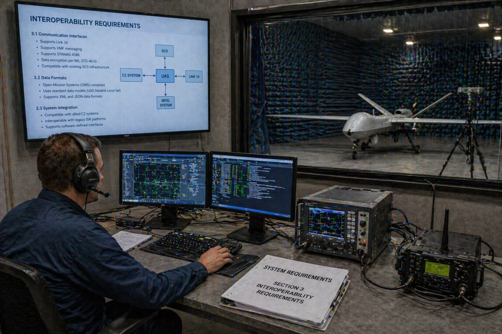

This document establishes the system-level requirements baseline for SPARTA at PDR maturity. It converts mission drivers, stakeholder needs, and architectural constraints from Deliverable 01 into uniquely identified, enforceable, and verifiable system requirements that are allocated to architecture elements in Deliverable 03 and verified according to the strategy in Deliverable 04.
Figure 02-0a. Systems-engineering team reviewing the SPARTA System Requirements Specification. The SRS binder and the on-screen specification are the baseline artefacts under configuration control — both are governed by the conventions in §3 and the status columns in §5.
2. Scope and Applicability
The scope covers system-level requirements only. Allocation to lower-level items is summarized here and detailed in Deliverable 03. The baseline is suitable for PDR review and supports progressive refinement as external interface control documents and platform budgets are confirmed toward CDR.
3. Requirement Source Hierarchy, Conventions and Allocation Philosophy
3.1 Source Hierarchy
Mission and operational drivers (Deliverable 01).
Stakeholder needs and authority constraints.
Architecture drivers and interface assumptions.
Lifecycle, safety, security, and performance control needs.
Regulatory, accreditation, and environmental constraints applicable to the operational domain.
3.2 Requirement Conventions
Each requirement has a unique identifier and title.
Each requirement uses “shall” language and is testable or otherwise verifiable.
Requirements are grouped by category: Functional (SYS-FUNC), Performance (SYS-PERF), Operational (SYS-OPS), Interface (SYS-IF), Data (SYS-DATA), Safety (SYS-SAFE), Security (SYS-SEC), RAM (SYS-RAM), Environmental (SYS-ENV), Human Factors (SYS-HFE), Design Constraint (SYS-DC).
Numerical values flagged as provisional shall be confirmed by representative mission / threat analysis prior to CDR.
Verification methods follow IEEE standard practice: Inspection, Analysis, Test, Demonstration (I / A / T / D).
3.3 Allocation Philosophy
System-level requirements are allocated to the Edge Agent, the optional Tactical Correlator, interface adapters, the data model, or system-wide architecture depending on where realization responsibility primarily resides. Authority-sensitive functions remain system-level until interface contracts with MARS/TSOC are finalized. The allocation matrix in §7 is normative; the detailed allocation inside Deliverable 03 is derived from it.
flowchart LR
N["Stakeholder Need"] --> R["System Requirement"]
R --> A["Architecture Allocation"]
A --> V["Verification Method"]
V --> E["Verification Evidence"]
R -.traces up.-> Op["Operational Driver (D1)"]
A -.governed by.-> Arch["Architecture Drivers (D3)"]
Figure 02-1. Requirement traceability logic used throughout the baseline.
4. Stakeholder Needs to Requirement Mapping
Need ID
Stakeholder Need
Derived Requirements
SN-01
Detect cyber and mission-behavior anomalies on each node.
SYS-FUNC-001..004; SYS-OPS-001
SN-02
Provide MARS with timely, bounded trust and recommendation outputs.
Secure identity and content integrity for all exchanges.
SYS-SEC-001..004; SYS-IF-004
SN-08
Fit into operational workflows and human cognition under stress.
SYS-HFE-001..002; SYS-DATA-003
SN-09
Meet applicable accreditation, classification, and regulatory constraints.
SYS-SEC-002, 004; SYS-ENV-002; SYS-DC-003
SN-10
Support training, exercise, and replay without production risk.
SYS-OPS-005; SYS-DATA-005
5. System Requirements Baseline
5.1 Functional Requirements (SYS-FUNC-*)
ID
Title
Requirement Statement
Rationale
Source
V&V
Allocation
Status
SYS-FUNC-001
Ingest platform telemetry
The system shall ingest platform and host telemetry necessary to assess node cyber health and service status, at a rate sufficient to support the SYS-PERF-001 latency budget.
Local evidence basis.
SN-01
T / A
Edge Agent · Data Acquisition
Approved
SYS-FUNC-002
Ingest mission context
The system shall ingest mission role, task, and relevant state context from MARS sufficient to evaluate mission-behavior plausibility.
Enables mission-aware detection.
SN-01, SN-02
T / A
MARS Interface Adapter
Approved
SYS-FUNC-003
Detect local anomalies
The system shall detect local integrity, communications, and mission-behavior anomalies on each deployed node.
Core sensing function.
SN-01
T
Detection Engine
Approved
SYS-FUNC-004
Classify anomalies
The system shall classify detected anomalies by type, severity, confidence, and mission relevance using the AnomalyEvent data object.
Supports downstream trust & response logic.
SN-01, SN-03
T / I
Detection Engine
Approved
SYS-FUNC-005
Estimate trust
The system shall generate a TrustAssessment for each monitored node containing trust state, confidence, basis, mission impact, and validity window.
Primary output to MARS/TSOC.
SN-02
T / A
Trust Engine
Approved
SYS-FUNC-006
Support tactical fusion
The system shall support neighborhood-level cross-node correlation using compact, provenance-bearing PeerSummary objects.
Detects distributed patterns.
SN-03
T / A
Correlation Engine / Tactical Correlator
Approved
SYS-FUNC-007
Publish recommendations
The system shall generate structured ResponseRecommendation objects and constraint advisories for consuming mission systems.
Supports action without authority ambiguity.
SN-02, SN-04
T
Response Engine
Approved
SYS-FUNC-008
Persist evidence
The system shall persist AnomalyEvent and assessment history locally for subsequent synchronization and audit.
Supports TSOC adjudication & recovery.
SN-05
T / I
Evidence Store
Approved
SYS-FUNC-009
Policy enforcement
The system shall enforce the active PolicyBundle in all trust-state transitions, response generation, and local protective actions.
Guarantees authority separation and bounded behavior.
SN-04, SN-09
T / I
Policy Manager
Approved
SYS-FUNC-010
Self-health reporting
The system shall continuously report its own operational health and degradation flags via the HealthReport object.
Operator visibility into SPARTA readiness.
SN-02, SN-06
T
Edge Agent · Health Monitor
Approved
5.2 Performance Requirements (SYS-PERF-*)
ID
Title
Requirement Statement
Rationale
Source
V&V
Allocation
Status
SYS-PERF-001
Decision latency
The system shall provide an initial TrustAssessment for locally detected high-severity events within an objective of 2 s and a threshold of 5 s (P95) from event qualification.
Bounds tactical usefulness.
Op. driver
T / A
Edge Agent
Provisional (PDR)
SYS-PERF-002
Tactical message size
The system shall support PeerSummary exchange at a nominal serialized size of ≤ 4 kB excluding transport overhead, with a hard limit of 8 kB.
Protects tactical bandwidth.
C-03
T / A
Comms Manager
Provisional
SYS-PERF-003
Evidence buffering depth
The system shall buffer mission-relevant evidence for a provisional minimum of 24 h of disconnected operation or until local storage threshold is reached.
Maintains continuity under link loss.
SN-05
T
Evidence Store
Provisional
SYS-PERF-004
Host CPU share
The system shall operate within an allocated CPU share not exceeding 10% of a reference node-class core equivalent under sustained Monitor load.
Protects host mission functions.
SN-06
T / A
All deployed elements
Provisional
SYS-PERF-005
Host memory share
The system shall operate within an allocated memory footprint not exceeding 512 MB RSS for the Edge Agent on reference node class.
Protects host resources.
SN-06
T
Edge Agent
Provisional
SYS-PERF-006
Persistent storage share
The system shall use no more than 8 GB of persistent storage on reference node class for evidence and operational state.
Protects host storage.
SN-06
T
Evidence Store
Provisional
SYS-PERF-007
Publication jitter
The system shall publish TrustAssessment updates with inter-update jitter not exceeding ±500 ms under nominal Monitor load.
Stable MARS consumption.
SN-02
T
Edge Agent · MARS Adapter
Provisional
5.3 Operational Requirements (SYS-OPS-*)
ID
Title
Requirement Statement
Rationale
Source
V&V
Allocation
Status
SYS-OPS-001
Disconnected operation
The system shall continue local monitoring and trust estimation during loss of TSOC connectivity for at least the SYS-PERF-003 buffering depth.
Operational resilience.
SN-04
T / D
Edge Agent
Approved
SYS-OPS-002
Graceful degradation
The system shall indicate degraded-confidence outputs when required data sources or peer links are unavailable, and shall annotate the basis of degradation.
Preserves credibility.
SN-02
T / A
Trust Engine
Approved
SYS-OPS-003
Recovery logic
The system shall support controlled recovery and reintegration of suspect or isolated nodes via bounded intermediate trust states.
Safe re-entry.
SN-04
T
Trust Engine / Policy Manager
Approved
SYS-OPS-004
Policy-controlled action
The system shall apply local protective actions only when explicitly enabled by the active PolicyBundle and within time-bounded authority envelopes.
Authority separation.
SN-04
I / T
Response Engine / Policy Manager
Approved
SYS-OPS-005
Exercise / replay mode
The system shall support an exercise mode that injects synthetic events with a visible exercise tag in all outputs and evidence.
Training and validation without production risk.
SN-10
T / D
Edge Agent / Policy Manager
Approved
5.4 Interface Requirements (SYS-IF-*)
ID
Title
Requirement Statement
Rationale
Source
V&V
Allocation
Status
SYS-IF-001
MARS interface
The system shall provide a versioned, schema-governed interface to MARS for reception of mission context and publication of TrustAssessment and ResponseRecommendation.
Essential external integration.
SN-02
I / T
MARS Interface Adapter
Approved
SYS-IF-002
TSOC interface
The system shall provide a secure, versioned interface to one or more TSOCs for transmission of alerts and EvidencePackage, and for reception of PolicyBundle, adjudication, and intelligence inputs.
Essential external integration.
SN-05
I / T
TSOC Interface Adapter
Approved
SYS-IF-003
Peer interface
The system shall support authenticated peer-to-peer exchange of PeerSummary objects for neighborhood-level correlation.
Supports distributed fusion.
SN-03
T
Comms Manager
Approved
SYS-IF-004
Identity & crypto provisioning
The system shall interface with the mission identity/crypto provisioning service for acquisition and renewal of node keys and trust anchors.
Provenance foundation.
SN-07
I / T
Security Services
Approved
SYS-IF-005
Schema governance
All external interfaces shall carry schema version and validity metadata and shall reject malformed or unsupported-version messages in a controlled manner.
Interface evolution without regression.
SN-06, SN-09
I / T
All external adapters
Approved

Figure 02-IF. Interoperability bench. Schema, protocol, and cross-domain conformance are validated against the SYS-IF-* catalogue (MARS, TSOC, peer, identity, schema governance) and SYS-ENV-002 cross-domain structure ahead of integration campaigns.
5.5 Data Requirements (SYS-DATA-*)
ID
Title
Requirement Statement
Rationale
Source
V&V
Allocation
Status
SYS-DATA-001
NodeStatus object
The system shall represent node cyber state using a versioned NodeStatus object containing identity, role, trust state, confidence, freshness, and health summary.
Stable operational semantics.
Arch baseline
I / T
Data Model
Approved
SYS-DATA-002
AnomalyEvent object
The system shall represent anomaly findings using a versioned AnomalyEvent object containing classification, severity, confidence, provenance, timing, and related entities.
Traceability & fusion.
Arch baseline
I / T
Data Model
Approved
SYS-DATA-003
Assessment explainability
The system shall attach basis and reason-chain attributes to TrustAssessment and ResponseRecommendation sufficient for human review and machine traceability.
Adoption and audit.
SN-05, SN-08
I / A
Data Model · Trust/Response Engines
Approved
SYS-DATA-004
PeerSummary object
The system shall represent tactical peer exchanges using a compact, signed PeerSummary object with provenance, observed trust map, freshness, and anomaly references.
Bandwidth-efficient correlation.
SN-03
I / T
Data Model · Comms Manager
Approved
SYS-DATA-005
Exercise tagging
All data objects generated under exercise mode shall carry a non-forgeable exercise tag propagated through all outputs and persistence.
Prevents exercise/real-world confusion.
SN-10
I / T
Data Model · Policy Manager
Approved
5.6 Safety Requirements (SYS-SAFE-*)
ID
Title
Requirement Statement
Rationale
Source
V&V
Allocation
Status
SYS-SAFE-001
Mission-safe behavior
The system shall fail in a manner that does not autonomously create mission-unsafe actions outside authorized policy.
Safety envelope.
Safety driver
A / T
All
Approved
SYS-SAFE-002
Reversibility of local action
The system shall ensure policy-enabled local protective actions are reversible or time-bounded unless superseded by higher authority.
Avoids permanent damage from false positive.
Safety / ops driver
T
Response Engine
Approved
SYS-SAFE-003
Fail-safe state
On unrecoverable fault, the system shall enter a Safe state in which no outbound mission-affecting message is generated and a safe-state heartbeat is maintained.
Fault containment.
Safety driver
T / A
Edge Agent · Watchdog
Approved
5.7 Security Requirements (SYS-SEC-*)
ID
Title
Requirement Statement
Rationale
Source
V&V
Allocation
Status
SYS-SEC-001
Identity and provenance
The system shall authenticate and validate provenance of all externally received PeerSummary, PolicyBundle, adjudication, and intelligence messages.
Protects against trust poisoning.
Security driver
T
Comms Manager · Policy Manager
Approved
SYS-SEC-002
Data protection
The system shall protect stored and transmitted SPARTA data according to mission security policy and classification constraints.
Information assurance.
Security driver
I / T
Comms · Evidence Store
Approved
SYS-SEC-003
Software / configuration integrity
The system shall provide mechanisms to detect material local configuration or software-integrity deviation relevant to trust assessment.
Foundation for local assurance.
Security driver
T
Platform Assurance
Approved
SYS-SEC-004
Policy bundle authenticity
The system shall accept only PolicyBundles that pass signature and schema validation against the configured trust anchors.
Prevents unauthorized policy injection.
Security / accred.
T / I
Policy Manager
Approved
Figure 02-SEC. Cybersecurity Operations Centre — the environment in which SYS-SEC-001..004 are enforced. Identity and provenance, data protection, software/configuration integrity, and policy-bundle authenticity are operationalised by analyst workflows feeding (and consuming) SPARTA trust outputs.
5.8 RAM Requirements (SYS-RAM-*)
ID
Title
Requirement Statement
Rationale
Source
V&V
Allocation
Status
SYS-RAM-001
Availability architecture
Loss or restart of one SPARTA node instance shall not preclude continued operation of other deployed instances.
Distributed resilience.
RAM driver
A / T
System architecture
Approved
SYS-RAM-002
Maintainability of content
The system shall support controlled update of rules, models, and policies without changes to the accredited software baseline.
Lifecycle efficiency.
Maintainability
I / T
Policy / Model Management
Approved
SYS-RAM-003
Audit retention
The system shall retain sufficient event and assessment history to support post-mission reconstruction within the SYS-PERF-006 storage envelope.
Incident reconstruction.
SN-05
T
Evidence Store
Approved
SYS-RAM-004
Startup time
The system shall reach Monitor mode within 60 s of mission-active command on reference node class.
Mission readiness.
Op. driver
T
Edge Agent
Provisional
Figure 02-RAM. Reliability engineering test bench. SYS-RAM-* targets — MTBF, MTTR, availability, startup time — are demonstrated under sustained operation and environmental stress screening in accordance with the V&V strategy in Deliverable 04 §5.
5.9 Environmental Requirements (SYS-ENV-*)
ID
Title
Requirement Statement
Rationale
Source
V&V
Allocation
Status
SYS-ENV-001
Contested-network operation
The system shall operate over hybrid, intermittent, and degraded tactical communications within the environmental envelope of §8 of Deliverable 01.
Primary environment.
Op. driver
T
Comms · Architecture
Approved
SYS-ENV-002
Cross-domain compatibility
External messages shall be structured such that cross-domain filtering and classification marking are feasible without modification of payload semantics.
Coalition / multi-domain readiness.
SN-09
I / A
Data Model · Adapters
Approved
Figure 02-ENV. Environmental qualification chamber. SYS-ENV-001 (contested-network operating envelope) and the supporting environmental test programme (temperature, humidity, altitude, vibration, ingress) verify that SPARTA's deployment envelope is closed before operational release.
5.10 Human Factors Requirements (SYS-HFE-*)
ID
Title
Requirement Statement
Rationale
Source
V&V
Allocation
Status
SYS-HFE-001
Human consumability
The system shall express trust outputs and recommendations in a concise, consistent, and unambiguous form suitable for operator and analyst interpretation.
Usability under stress.
SN-08
I / D
Data Model / UI consumers
Approved
SYS-HFE-002
Reason-chain accessibility
On request, the system shall produce the reason-chain for any published TrustAssessment in a form suitable for analyst inspection.
Explainability in operation.
SN-05, SN-08
T / D
Trust / Evidence services
Approved
5.11 Design Constraint Requirements (SYS-DC-*)
ID
Title
Requirement Statement
Rationale
Source
V&V
Allocation
Status
SYS-DC-001
Authority boundary
The system shall not directly assume mission command authority for tasking, targeting, or fleet-level exclusion decisions.
Design constraint.
Programmatic
I
System design
Approved
SYS-DC-002
Deployment flexibility
The system shall support Mode A (edge-local only), Mode B (+tactical correlation), and Mode C (+TSOC-linked adaptive) without changing core external data objects.
Phased adoption.
Architecture driver
T / I
Architecture
Approved
SYS-DC-003
Regulatory conformance
The system shall be designed to support applicable accreditation, classification, and operational-use regulations for its target domain.
Accreditation feasibility.
SN-09
I / A
System design
Approved
SYS-DC-004
Content / software separation
Operational content (policies, rules, models) shall be managed, signed, and versioned independently of the accredited software baseline.
Sustainment efficiency.
SN-06
I / T
Policy / Model Mgmt
Approved
Provisional Values
Numerical performance values in SYS-PERF-001..007 and SYS-RAM-004 are PDR-level provisional commitments. They shall be confirmed during representative platform integration and mission/threat analysis prior to CDR.
10. Assumptions, TBD/TBC Items and Rationale Notes
TBD / TBC Items for CDR Exit
Final threshold values for detection latency, storage depth, and CPU/memory budgets (SYS-PERF-* provisional).
Protocol selections and security profile for peer summary exchange.
Formal message schemas and ICD ownership split with MARS and TSOC suppliers.
Classification-boundary policy for coalition / cross-domain operations.
Requirement Rationale Theme
The requirements intentionally bias toward outputs that are operationally meaningful and verifiably bounded, rather than broad cyber ambitions that cannot be certified or integrated into MARS/TSOC decision loops. Numerical provisional values are intentionally tight enough to be disciplined and loose enough to be achievable by the reference architecture.